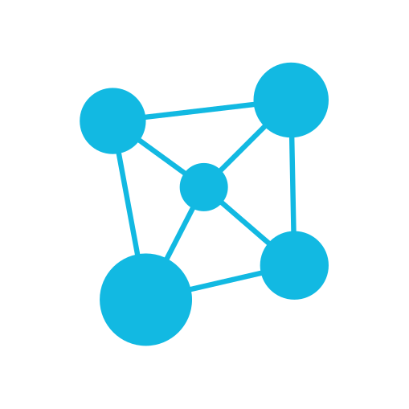
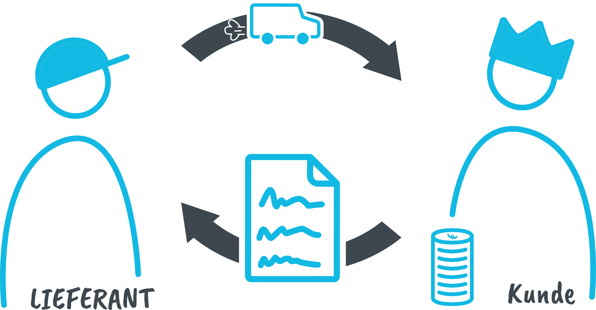

Ein Projekt ist eine für einen befristeten Zeitraum geschaffene Organisation, die den Auftrag hat, mindestens ein Produkt entsprechend einem vereinbarten Business Case zu liefern.
Portfolio
Unter einem Portfolio wird die Gesamtheit aller Investitionen einer Organisation verstanden, die eingesetzt werden, um notwendige Änderungen herbeizuführen und strategische Ziele zu erreichen.

Programm
Ein Programm ist eine flexible Organisationsstruktur. Der Zweck ist es mehrere Projekte, die zusammengehören, zu koordinieren und zu lenken.
Einzelprojekt
Projekte werden vielfach einzeln durchgeführt, ohne in die Strukturen eines Portfolios oder Programms eingebettet zu sein.
PRINCE2 (Projects in Controlled Environments) ist eine allgemeingültige, strukturierte Projektmanagementmethode, die auf den Erfahrungen, die in unzähligen erfolgreichen Projekten gesammelt wurden („Best Practice“), beruht. Die Methode konzentriert sich auf das reine Management eines Projekts. Spezielle Kenntnisse und Fähigkeiten, die benötigt werden, um Projektergebnisse zu erzielen, sind nicht Bestandteil der Methode, ebenso wenig wie die Vermittlung von Führungsqualitäten. Durch stabile und gleichzeitig flexible Strukturen kann PRINCE2 auf jedes Projekt angepasst werden - unabhängig von der Art, dem Umfang, der Organisation und dem kulturellen Hintergrund des Vorhabens.
Ein PRINCE2 Projekt findet grundsätzlich im Kunden-Lieferanten Umfeld statt. Der Kunde gibt das Projekt in Auftrag und bezahlt dafür. Er erwartet die vereinbarten Ergebnisse. Der Lieferant fertigt die Projektoutputs zu den vereinbarten Kosten und der vereinbarten Qualität an. Lieferantenteams können sowohl zur Kundenorganisation gehören, es kann sich aber ebenso um externe Dienstleister handeln.


Um ein Projekt erfolgreich managen zu können, müssen zur Steuerung der Projektleistung die wesentlichen Aspekte, bzw. Dimensionen gesteuert werden.
Damit ein Projekt als PRINCE2-Projekt gilt, muss mindestens Folgendes nachgewiesen werden: Bei dem Projekt werden die PRINCE2-Grundprinzipien angewendet. Die in den PRINCE2-Themen dargelegten Mindestanforderungen werden erfüllt. Das Projekt umfasst Projektprozesse, die dem Zweck und den Zielen der PRINCE2-Prozesse entsprechen. Für das Projekt werden entweder die gemäß PRINCE2 empfohlenen Techniken oder alternative, gleichwertige Techniken verwendet.

Die 7 Grundprinzipien
Die 7 Grundprinzipien sind die Grundlagen für erfolgreiches Projektmanagement, die aus den Erfahrungen erfolgreicher Projekte abgeleitet sind.
Die 7 Themen
Die 7 Themen beschreiben die Bereiche des Projektmanagements, die bei der Abwicklung eines Projekts fortlaufend betrachtet und behandelt werden müssen.
Die 7 Prozesse
Die 7 Prozesse beschreiben den strukturierten Ablauf eines Projekts, von der Vorbereitung über die Durchführung bis zum Abschluss des Projekts.
Die Projektumgebung
Die Methode PRINCE2 sollte generell an die Bedürfnisse einer Organisation und an deren Arbeitsweise angepasst werden.

Die Grundprinzipien sind grundlegende Regeln, die sich über viele Jahre hinweg in der Praxis als wertvoll und allgemeingültig erwiesen haben. Sie bieten einen Rahmen mir erprobten Vorgehensweisen und sich universell auf jedes Projekt anwendbar.
-
Fortlaufende geschäftliche Rechtfertigung
Es muss einen berechtigten Grund für den Start des Projekts geben. Die Rechtfertigung dafür muss aufgezeichnet und genehmigt sein und während des gesamten Projektverlaufs gegeben sein.
-
Lernen aus Erfahrung
Schon beim Projektstart sollte (soweit möglich) auf Erfahrungen, die bei früheren oder ähnlichen Projekten gemacht wurden, zurückgegriffen werden.
Während des weiteren Projekts sollte dieser Lernprozess fortgesetzt werden, in dem darauf geachtet wird, wichtige Erfahrungen mit Hilfe der entsprechenden Berichte und Aufzeichnungen zu dokumentieren. Idealerweise können möglichst viele Verbesserungen noch während der Projektlaufzeit umgesetzt werden. -
Definierte Rollen und Verantwortlichkeiten
Im PRINCE2 Projekt sollte die Organisationsstruktur so aufgebaut sein, dass alle wesentlichen Interessen angemessen vertreten sind. Die Interessen des Unternehmens, der Benutzer und der Lieferanten sollten sich in der Struktur des Projektmanagementteams wiederspiegeln.
-
Steuern über Managementphasen
Eine Managementphase ist ein Abschnitt im Projekt, dessen Durchführung im Auftrag des Lenkungsausschusses an den Projektmanager delegiert wird.
Am Ende einer Managementphase werden die erzielten Ergebnisse vom Lenkungsausschuss überprüft. Zudem wird der Phasenplan für die neue, bevorstehende Phase überprüft. Auf der Basis entscheidet der Lenkungsausschuss, ob das Projekt fortgeführt werden soll.
Ein PRINCE2 Projekt besteht immer aus mindestens zwei Phasen:
Der Initiierungsphase und mindestens einer darauffolgenden Managementphase, der eigentlichen Durchführung des Projekts. -
Steuern nach dem Ausnahmeprinzip
In einem PRINCE2 Projekt können für jedes Projektziel und für jeden Leistungsaspekt Toleranzen – die zulässigen Abweichungen vom vorgegebenen Ziel – definiert werden. An die nächsthöhere hierarchische Ebene muss nur eskaliert werden, wenn es zu einer Ausnahme kommt. Eine Ausnahme ist eine Abweichung über die vereinbarten Toleranzgrenzen hinweg. Die Einhaltung dieses Grundprinzips trägt zu einem sehr effizienten Einsatz der Arbeitszeit von Führungskräften bei.
-
Produktorientierung
Bei einem PRINCE2 Projekt steht immer im Fokus, WAS geliefert wird und nicht, WIE es geliefert wird.
Bei PRINCE2 werden alle Outputs des Projekts als Produkte bezeichnet:
Spezialistenprodukte, womit die eigentlichen Liefergegenstände des Projekts gemeint sind und
Mangementprodukte, womit die Produkte (in aller Regel Dokumente) gemeint sind, die zum Management des Projektes benötigt werden. -
Anpassen an die Projektumgebung
Die Anpassung der Methode PRINCE2®ist unbedingt erforderlich. Prinzipiell kann können die Prozesse, die Themen, die Rollen, die Managementprodukte und die Terminologie angepasst werden.
Einzig die Grundprinzipien selbst werden NICHT angepasst: Sie sind universell und gelten immer.

© Copyrights PRINCE2© is a registered trademark of AXELOS Limited, used under permission Limited. All rights reserved. The Swirl logo™ is a trademark of the AXELOS Limited, used under permission Limited. All rights reserved. Based on AXELOS PRINCE2© material. Reproduced under licence from AXELOS Limited. All rights reserved.